2.1 Khởi động MS Word
Cách 1: Nháy đúp chuột vào biểu tượng Microsoft Word trên cửa sổ Desktop
Cách 2: Kích chuột vào nút Start chọn All Programs chọn Microsoft Office chọn Microsoft Word 2019.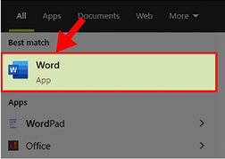
Lưu ý: Nếu chưa có chương trình ta có thể sử dụng phương pháp cài đặt hoặc nếu đã
có chương trình mà chưa có biểu tượng ta sử dụng phương pháp tạo biểu tượng
2.2 Kết thúc MS Word
Chọn menu File chọn mục Exit (hoặc nhấn tổ hợp Alt + F4) Hoặc bấm vào nút Close ở góc trên bên phải màn hình MS Word, sau đó chọn lưu (hoặc không lưu) công việc vừa thực hiện và thoát khỏi cửa sổ làm việc của Microsoft Word.
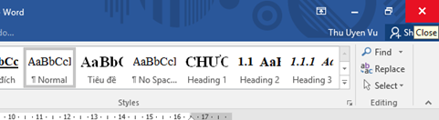
Hình 4.11. Kết thúc Word bằng nút Close
2.3 Tạo văn bản mới
• Cách 1: Lựa chọn menu File chọn New sau đó nhấn chuột vào Blank document
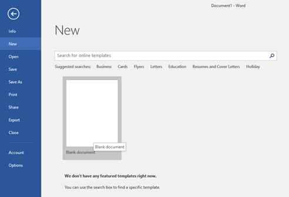
Hình 1.12. Tạo văn bản mới
• Cách 2: Nhấn tổ hợp phím Ctrl +N.
• Cách 3: Muốn tạo một tài liệu mới từ mẫu có sẵn: Lựa chọn menu File chọn New sau đó nhấn chuột vào một tài liệu mẫu nào đó sẵn có khi cài đặt MS Word ở mục Sample Templates. Nếu không có thì người dùng có thể tìm kiếm mẫu online tại thanh tìm kiếm trên màn hình
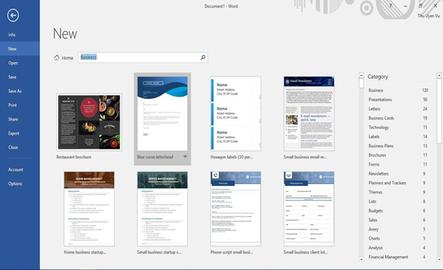
Hình 4.13. Tìm kiếm văn bản mẫu online
Sau đó chọn một mẫu văn bản cần tạo. Nhấn nút Create để tạo một tài liệu mới từ mẫu đã chọn.
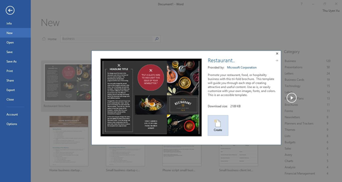
Hình 4.14. Lựa chọn văn bản mẫu có sẵn
2.4 Lưu văn bản
Khi thực hiện lưu trữ văn bản ta nhấn vào menu File chọn Save (hoặc bấm tổ hợp phím Ctrl + S) hoặc Save As (hoặc bấm phím F12), hoặc Chọn biểu tượng Save trên thanh Quick Access Toolbar.
Với Word
2019 có một số định dạng cơ bản trong phần Save as type như
sau:
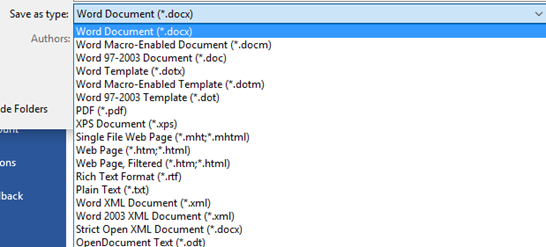
Hình 4.15. Các mẫu định dạng File khi lưu
*.doc: Định dạng cũ của Office từ 97-2003.
*.docx: Định dạng mới Office 2007, 2010, 2013 và 2016.
*.pdf: Định dạng sang dạng File PDF.
*.xps: Định dạng chỉ đọc trên Windows.
*.dot: Tạo ra mẫu Template theo Office từ 97-2003.
*.dotx: Tạo ra mẫu Template theo Office 2007, 2010, 2013 và 2016.
*.dotm: Tạo ra mẫu Template cho phép sử dụng Macro.
….
=> Thao tác lưu File chưa có tên vào ổ đĩa: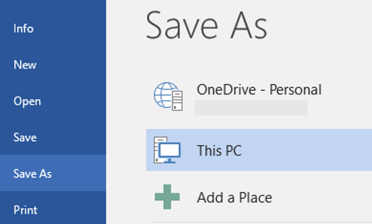
Hình 4.16. Màn hình lệnh lưu file
=> Hộp thoại lưu File hiện ra
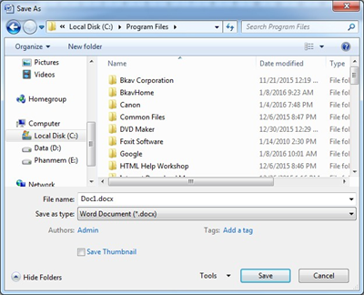
Hình 4.17. Hộp thoại lưu File văn bản mới
- Bước 1: Cửa sổ bên trái: lựa chọn ổ đĩa hoặc thư mục chứa File mới cần lưu.
- Bước 2: Cửa sổ chính: nháy đúp vào thư mục chứa File cần lưu.
- Bước 3: Gõ tên File văn bản cần lưu trong hộp File Name.
- Bước 4: Nhấn nút Save.
=> Thao tác ghi File có mật khẩu:
- Mục đích: Chỉ người dùng gõ đúng mật khẩu mới mở được File .
- Thao tác:
+ Bước 1: Kích chuột vào menu File chọn Save As… (hoặc nhấn F12),
+ Bước 2: Kích chuột vào nút Tools chọn General Options gõ mật khẩu vào mục Password to Open: Gõ mật khẩu nhấn OK, máy nhắc lại lần nữa và nhấn OK.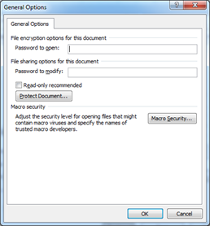
Hình 4.18. Hộp thoại tạo mật khẩu khi mở File văn bản
Lưu ý: Sau thao tác đó khi mở File đều phải gõ mật khẩu.
- Thao tác bỏ mật khẩu:
+ Bước 1: Kích chuột vào menu File chọn Save As…(F12)
+ Bước 2: Chọn nút Tools chọn General Options, xóa mật khẩu.
+ Bước 3: Kích chuột chọn OK
=> Thao tác lưu thêm nội dung File đã có tên:
Lựa chọn menu File chọn Save (hoặc nhấn tổ hợp phím Ctrl + S)2.5 Mở văn bản ra đã có
• Kích chuột vào menu File chọn Open (hoặc nhấn tổ hợp phím Ctrl + O) chọn vị trí lưu trữ tập tin cần mở.
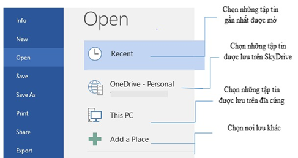
Hình 4.19. Màn hình mở File đã có
Hoặc tại màn hình này bấm vào nút Browse sẽ xuất hiện hộp thoại mới
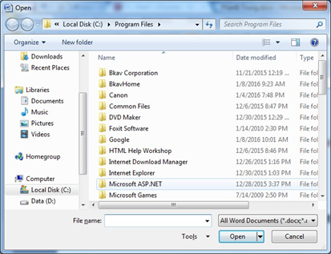
Hình 4.20. Hộp thoải mở File văn bản lưu trong máy
+ Bước 1: Chọn ổ đĩa hoặc Folder chứa tên File cần mở
+ Bước 2: Xuất hiện danh sách File, kích chuột chọn tên File. Chọn nút Open để
mở File.
Chú ý: Trong Word cho phép mở nhanh các File mới mở bằng cách kích chuột vào menu File chọn Recent và chọn tên File cần mở.
- Cùng lúc có thể mở được nhiều File, do đó để chuyển tới các File đang được mở ta lựa biểu tượng File trên thanh Start và chọn tên File cần chuyển tới.
- Dữ liệu giữa các File có thể sao chép với nhau.
2.6 Hiển thị văn bản
Trong Word, người dùng có thể hiển thị một tài liệu trong một loạt các cách hiển thị khác nhau, mỗi dạng phù hợp với một mục đích cụ thể. Các cách hiển thị bao gồm Print Layout view (mặc định), toàn màn hình – Reading, Giao diện web – Web Layout, dạng nhìn Outline, và Dự thảo - Draft.
Để chuyển
đổi giữa các cách hiển thị :
- Vào Tab View -> groups View -> chọn dạng muốn hiển thị tài liệu
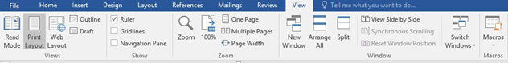
Hình 1.21. Menu View
- Hoặc bên phải trên thanh Status Toolbar à chọn dạng hiển thị: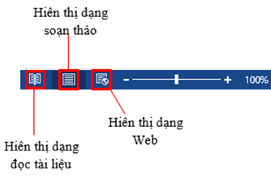
- Hiển thị thước trong Word:
Để hiển thị / ẩn thanh thước ngang và thước dọc trong cửa sổ soạn thảo, người dùng chọn Tab View à group Show à check Ruler:
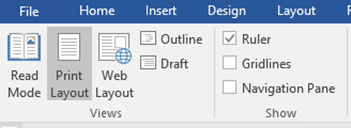
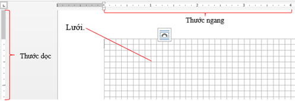
- Tách trang tài liệu để so sánh
Khi người dùng soạn thảo một văn bản khá dài, hàng trăm trang, và có những phần người dùng muốn so sánh với nhau nhưng lại nằm trên những vị trí xa nhau. Ví dụ như người dùng muốn so sánh mở đầu và kết luận của một bài tiểu luận để có thể viết tốt hơn. Split Window trong Word sẽ giúp người dùng giải quyết.
- Tab View -> group Window -> Split
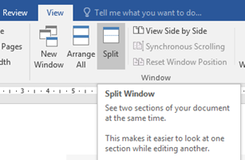
Để trở lại màn hình như ban đầu à Tab View à group Window à Remove Split
- Hiển thị đồng thời nhiều cửa sổ
Có nhiều lúc bạn làm việc trên nhiều tập tin tài liệu khác nhau, thật là bất tiện khi phải mở từng tập tin, Word cho phép bạn hiển thị cùng lúc trên màn hình nhiều cửa sổ làm việc, hay mở đồng thời một tập tin trên hai cửa sổ.
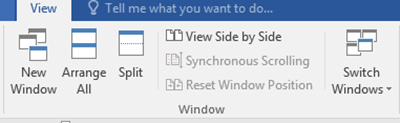
- New Window: Mở thêm 1 cửa sổ mới chứa tài liệu hiện tại
- Arrange All: Sắp xếp tất cả các cửa sổ Word trên cùng một màn hình
- View Side by Side: Chọn cửa sổ hiện thị đồng thời
- Phóng to/thu nhỏ văn bản
Khi mở hay làm việc với cửa sổ Word, người dùng có thể phóng to – thu nhỏ trang Word để dễ làm việc hơn.
- Cách 1: Chọn Tab View -> group Zoom -> Zoom
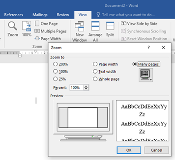
Hình 4.22. Thao tác phóng to – thu nhỏ văn bản
- Cách 2: Sử dụng công cụ trên thanh Status Bar
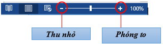
2.7 Thuộc tính của văn bản
Các khái niệm cơ bản:
- Kí tự (character): Là đơn vị cơ sở của văn bản, kí tự được nhập trực tiếp từ bàn phím và lệnh Insert/ Symbol.
- Từ (word): nhiều kí tự (kí tự trắng không phải là từ) liền nhau có nghĩa.
- Câu (sentence): Câu tập hợp các từ kết thúc bằng dấu ngắt câu (. ? : ! ;).
- Đoạn văn bản (paragraph): Nhiều câu có liên quan với nhau hoàn chỉnh về ngữ nghĩa. Trong văn bản đoạn được kết thúc bằng phím Enter.
- Trang (page): Vùng văn bản được thiết lập khổ giấy, lề, viền, …
- Phân đoạn (section): Là tập hợp các đoạn có cùng định dạng.
- Dòng (line): Tập các kí tự trên cùng một đường cơ sở (baseline) từ bên trái sang bên phải màn hình soạn thảo.
- Xuống dòng: Tự động và bằng tay (Shift+Enter).
Lưu ý:
- Khi gõ văn bản không dùng phím Enter để xuống dòng. Phím Enter chỉ dùng để kết thúc một đoạn văn bản hoàn chỉnh.
- Giữa các từ chỉ dùng một dấu khoảng trắng (phím spacebar) để phân cách. Không sử dụng dấu khoảng trắng đầu dòng cho việc căn chỉnh lề.
-
Các dấu ngắt câu như chấm (.), phẩy (,), hai chấm (, chấm phẩy (;), chấm than (!), hỏi
chấm (?) phải được gõ sát vào từ đứng trước nó, tiếp theo là một dấu khoảng trắng nếu sau đó
vẫn còn nội dung.
- Các dấu mở ngoặc và mở nháy đều phải được hiểu là ký tự đầu từ, do đó ký tự tiếp theo phải viết sát vào bên trái của các dấu này. Tương tự, các dấu đóng ngoặc và đóng nháy phải hiểu là ký tự cuối từ và được viết sát vào bên phải của ký tự cuối cùng của từ bên trái.
- Gõ xong toàn bộ văn bản mới thực hiện hiệu chỉnh và định dạng văn bản. Điểm chèn (insertion point – con trỏ văn bản) là đường thẳng đứng nhấp nháy trong
màn hình làm việc của Word. Nó hiển thị vị trí người dùng có thể nhập
văn bản trên trang tài liệu.
Người dùng có thể sử dụng điểm chèn theo nhiều cách khác nhau. Nếu khi mở một tài
liệu trống, điểm chèn sẽ xuất hiện ở góc trên cùng bên trái của trang. Nếu muốn
người dùng có thể nhập văn bản từ vị
trí này.
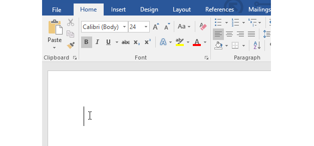
Hình 4.23. Màn hình vị trí bắt đầu soạn thảo văn bản
2.8 Lựa chọn khối văn bản
Trước khi định dạng hoặc di chuyển văn bản, người dùng sẽ phải lựa chọn văn bản đó. Để làm được điều này, người dùng có thể sử dụng 1 trong 2 thao tác với chuột hoặc bàn phím.
- Thao tác với chuột
Người dùng click và kéo chuột đến đoạn văn bản muốn chọn, sau đó thả chuột ra.
Đoạn văn bản được chọn sẽ được bôi đen.Một số thao tác khác:
- Nháy chuột trái 3 lần liên tiếp tại 1 vị trí, khi đó cả đoạn văn bản đã được lựa chọn
- Di chuyển chuột ra lề trái của văn bản, kích chuột trái vào dòng văn bản cần lựa chọn. Hoặc nháy chuột trái 2 lần liên tiếp để lựa chọn cả đoạn văn bản đó.
- Chọn nhiều đoạn văn bản, di chuyển chuột ra lề trái của đoạn văn bản, nhấn chuột trái giữ và kéo rê các đoạn cần lựa chọn.
• Thao tác với bàn phím
Nhấn và giữ phím Shift, sau đó chọn dùng các phím mũi tên lựa chọn.
- Lựa chọn tất cả File trong văn bản: nhấn tổ hợp phím Ctrl + A
Khi lựa chọn văn bản hoặc hình ảnh trong Word, một thanh Toolbar chứa các phím tắt lệnh sẽ xuất hiện. Nếu thanh Toolbar không xuất hiện, thử di chuột qua mục đã chọn.
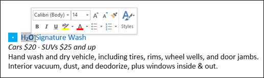
2.9 Sao chép/ di chuyển khối văn bản
Để thực hiện thao tác sao chép/di chuyển khối văn bản ngươi dùng cần thực hiện việc chọn khối văn bản đó trước. Sau đó thực hiện một trong các thao tác lệnh sau:
• Chọn lệnh Copy (để sao chép) hoặt lệnh Cut (để di chuyển) từ biểu tượng trên Tab Home à group Clipboard
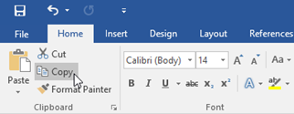
Hình 4.24. Lựa chọn lệnh Copy/Cut
• Bấm chuột phải (Right Click) trên đoạn văn bản đã chọn để sao chép/di chuyển -> Copy/Cut
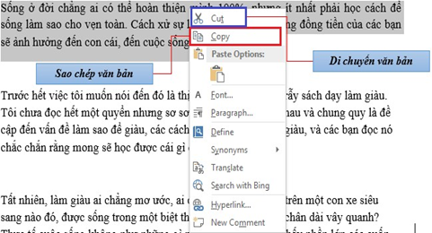
• Hoặc sử dụng tổ hợp phím tắt Ctrl + C (Copy)/ Ctrl + X (Cut) Chọn vị trí cần dán đoạn văn bản à chọn Paste:
• Chọn dán từ lệnh Paste trên Tab Home à group ClipboardBấm chuột phải trên vùng muốn dán đoạn văn bản à chọn Paste
• Bấm chuột phải trên vùng muốn dán đoạn văn bản à chọn Paste
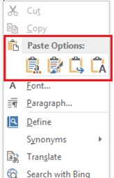
• Hoặc sử dụng tổ hợp phím tắt Ctrl + V (Paste)